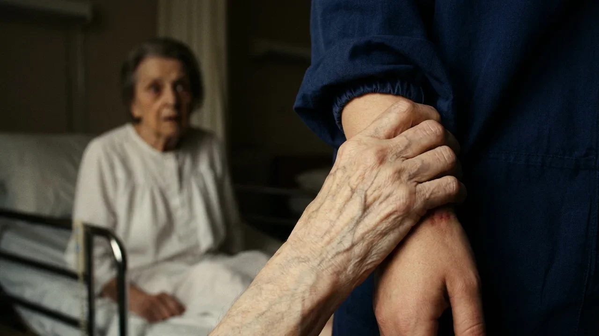
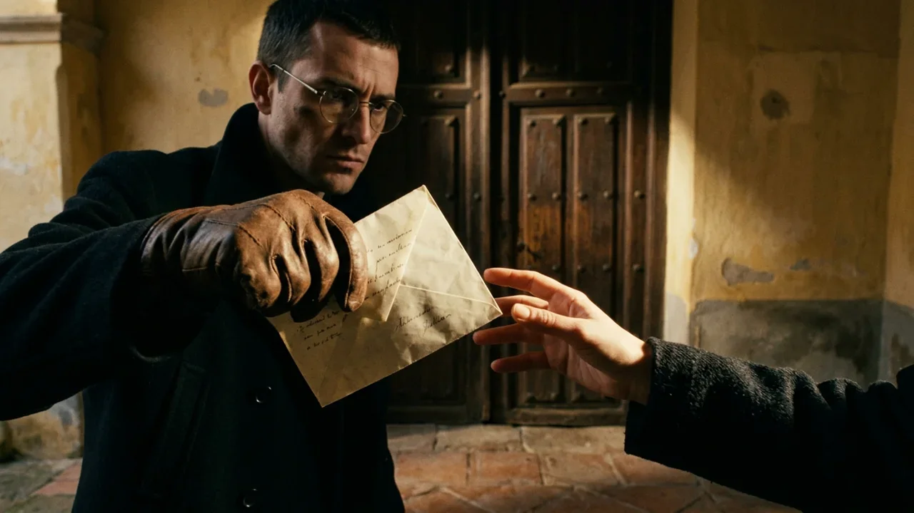
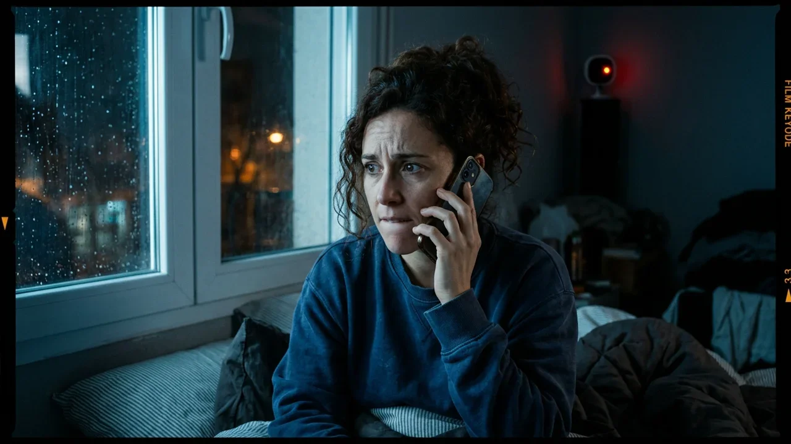
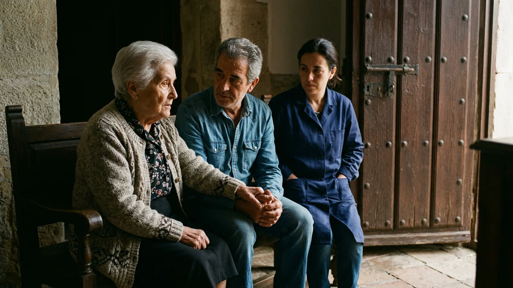

A las tres y diez de la madrugada, la mano de Amparo Huete se cerró sobre la muñeca de Yolanda con una fuerza impropia de una mujer de ochenta y ocho años.
—No le abras a mi hijo.
Yolanda había estado a punto de dormirse en el sillón de orejas, con el móvil sobre el pecho y la manta de cuadros hasta la barbilla. Tardó un segundo en entender dónde estaba: el dormitorio del segundo piso, la lamparita con la pantalla chamuscada por un lado, el olor a colonia de lavanda y a orina vieja que ningún ambientador terminaba de tapar. La anciana se había incorporado sola en la cama articulada. Tenía los ojos muy abiertos, clavados en la puerta del cuarto.
—Tranquila, Amparo. Aquí no viene nadie.
—No le abras. Prométemelo.
Las uñas se le hundían en la piel. Yolanda se lo prometió, por decir algo, y la mano se aflojó despacio, dedo a dedo, como si alguien la fuera desenroscando. Amparo se dejó caer sobre la almohada, abrazó el cojín bordado que tenía siempre al lado y se quedó dormida casi al instante, con la boca entreabierta.
Yolanda miró el reloj del móvil. Las tres y once.
Era su primera noche en aquella casa de la calle Alfonso VIII, estrecha y alta como todas las del casco antiguo de Cuenca, tres plantas encajadas en la roca y una ventana trasera asomada a la hoz del Huécar. La agencia le había advertido de que la señora tenía alzhéimer avanzado y que a veces decía cosas. No le habían dicho que las dijera así.
Bajó a la planta de la calle descalza, con la linterna del móvil encendida. Los peldaños de madera se quejaban a cada paso. La puerta principal seguía cerrada con dos vueltas de llave y la cadena echada, tal como la había dejado a las once. Pegó la oreja a la madera. Nada: el zumbido de la nevera al fondo del pasillo, el goteo de un canalón.
Se asomó a la mirilla. La calle subía empinada y vacía bajo una farola anaranjada. Enfrente, en el hueco de un portal, algo se movió. Un punto de luz blanca, una linterna, se apagó de golpe.
Yolanda se apartó de la puerta. Contó hasta veinte antes de volver a mirar.
El portal estaba a oscuras. No había nadie.
Julián Huete llegó a las nueve en punto, como había anunciado, con un abrigo de paño azul marino y unos guantes de piel que no se quitó para estrecharle la mano. Traía una bolsa de la farmacia y una carpeta.
—¿Qué tal la primera noche?
—Bien. Se despertó un momento, de madrugada.
—A las tres y pico, ¿verdad? —Julián sonrió con paciencia—. Las anteriores también lo comentaban.
Se sentaron en la cocina. Él abrió la carpeta y le fue señalando con un bolígrafo plateado el cuadrante de la medicación: la pastilla blanca a las ocho, media rosa con la cena, la cápsula a las once.
—Exactamente así. Mi tía se pone muy nerviosa si se altera la pauta.
Después vinieron las normas, que recitó como quien lee las cláusulas de un contrato. Nada de visitas. Nada de llamadas al fijo, que de todos modos estaba desconectado. Y nada de abrir la puerta de noche bajo ningún concepto, aunque dijeran que eran del gas, de la policía o el mismísimo obispo.
—Hay mucho desaprensivo detrás de las personas mayores que viven solas. Por eso puse eso. —Señaló con el bolígrafo hacia el pasillo. En la esquina del techo, junto a la escalera, había una cámara pequeña con un piloto rojo—. Por seguridad. La suya también.
Yolanda asintió. Pensó en los cuatrocientos euros que aún debía del último mes del piso de Benicalap, en su hija, que le contestaba a los mensajes con un emoticono, en lo que pagaba aquel trabajo: casi el doble que el anterior. Se mordió la cutícula del pulgar por debajo de la mesa.
—Anoche me dijo una cosa —se atrevió al fin—. Que no le abriera a su hijo.
Julián cerró la carpeta.
—Mi tía nunca tuvo hijos. Ni se casó. Se quedó para vestir santos, como se decía antes. Cosió para media Cuenca durante cincuenta años, y ya ve. —Hizo un gesto vago que abarcaba la casa entera: los muebles oscuros, el reloj de pared parado a las cinco—. La cabeza le mezcla cosas de la televisión, de las vecinas, de lo que sea. No le dé importancia. Y no le lleve la contraria, que se altera.
Se levantó, se ajustó los guantes y le dejó un sobre con el adelanto de la semana. Yolanda contó los billetes en cuanto la puerta se cerró. Estaban todos.
Por la tarde, mientras planchaba en el cuarto de costura, oyó cantar a Amparo en el dormitorio. Una voz rota y, aun así, afinada. Se asomó. La anciana mecía el cojín bordado contra el pecho, con la mejilla apoyada en la tela.
—Duérmete, Gabriel, duérmete ya, que viene la noche y te va a llevar…
Al ver a Yolanda en la puerta, dejó de cantar y escondió el cojín bajo la sábana, como una niña a la que pillan con algo robado.
La frase volvió la segunda noche, y la tercera, y todas las que siguieron. Las tres y diez. A veces Amparo la decía en voz baja, mirando al techo; otras se incorporaba de golpe y buscaba a Yolanda con las manos. Siempre las mismas palabras en el mismo orden, como una oración aprendida de memoria. Al cabo de una semana, Yolanda empezó a despertarse sola a las tres y nueve, antes que ella, con el corazón golpeándole en la garganta.
De día dormía mal, en el cuarto del tercer piso, con el sol de enero entrando de lado por una ventana sin persiana. Por las tardes, si no helaba, sacaba a Amparo en la silla de ruedas hasta la plaza de Mangana, tapada con dos mantas. Fue allí donde lo vio por primera vez: un hombre mayor, alto, con un abrigo gris de corte antiguo y una gorra de pana, sentado en el banco junto a la torre del reloj. No miraba el paisaje, como los turistas. Miraba la silla de ruedas.
El jueves volvió a verlo, esta vez frente a la casa, al otro lado de la calle, con las manos en los bolsillos y la vista levantada hacia la ventana del segundo piso. Cuando Yolanda descorrió la cortina, él se dio media vuelta y se marchó calle abajo, sin prisa.
El viernes por la mañana había un sobre en el suelo del zaguán. Lo habían pasado por debajo de la puerta durante la noche. Papel color crema, letra cuidada, a pluma: «Sra. D.ª Amparo Huete». Ningún remite. Yolanda lo tenía todavía en la mano cuando oyó la llave en la cerradura.
Julián miró el sobre antes que a ella.
—Deme eso.

Lo dijo con la misma voz amable de siempre, pero no esperó a que se lo diera: se lo quitó de entre los dedos y lo guardó en el bolsillo interior del abrigo sin abrirlo.
—Publicidad de residencias. Nos acosan desde que saben que está enferma. Si llega alguna más, me la guarda.
Luego dejó sobre la mesa de la cocina un blíster nuevo, sin caja.
—El médico ha cambiado la cápsula de la noche. Esta es más suave. Una a las once, como siempre.
Esa noche, antes de dársela, Yolanda le dio la vuelta al blíster bajo la lámpara de la cocina. El nombre venía impreso en el aluminio, en letras diminutas. Lo tecleó en el móvil, letra a letra. El primer resultado era un foro de enfermería; el segundo, el prospecto. Sedante e hipnótico. Indicado en casos de agitación severa. Precaución extrema en pacientes de edad avanzada. Lo comparó con la receta de la carpeta: aquel nombre no figuraba en ninguna parte.
Subió con el vaso de agua y la cápsula en la palma de la mano. Amparo abrió la boca, obediente, como un pájaro en el nido.
Yolanda dudó un instante. Después se la dio.
Según Julián, las mantas de invierno estaban en el armario del cuarto de costura. Yolanda subió a buscar otra la noche del domingo, porque el radiador del dormitorio había empezado a gotear y apenas calentaba. En el estante de arriba, detrás de las mantas que olían a naftalina, encontró una caja de zapatos atada con una cinta de raso descolorida.
No debía abrirla. Lo pensó mientras deshacía el lazo.
Dentro había botones sueltos, un dedal de plata, patrones recortados en papel de seda. Y debajo de todo, envuelta en un pañuelo de batista, una pulsera de hospital de las antiguas, de cartón plastificado y amarillento, tan pequeña que no le habría cabido ni en dos dedos. La letra a máquina estaba medio borrada, pero se podía leer: «Casa de Maternidad. Huete. Varón. 3:10. 14-II-1958».
Yolanda se sentó en el suelo con la pulsera en la mano.
Bajo el pañuelo había además un papel doblado en cuatro: un certificado de defunción. Varón recién nacido, hijo de Amparo Huete Ruiz, soltera. Causa: parada cardiorrespiratoria. Llevaba el sello de la Casa de Maternidad y un garabato que podía ser la firma de una religiosa. En el hueco reservado al nombre del médico no había nada. Ni siquiera una raya.
Las tres y diez. La hora a la que nació.
—¿Qué haces con eso?
Amparo estaba en la puerta, descalza, agarrada al marco con las dos manos. Yolanda no la había oído levantarse. Se puso de pie despacio, con la pulsera todavía en la palma, preparada para los gritos o la crisis que le habían advertido. Pero la anciana no gritó. Se acercó arrastrando los pies, cogió la pulsera y la miró de cerca, con la cabeza ladeada, igual que se mira la foto de alguien a quien se tarda en reconocer.
—Me dijeron que había nacido muerto —dijo. Su voz sonaba distinta, más grave y más entera—. La monja me lo dijo por la mañana. Que no había llegado a respirar y que era mejor no verlo. —Pasó el pulgar por las letras borradas—. Pero yo lo oí llorar. Lo oí llorar en el pasillo mientras se lo llevaban. Nadie me creyó.
—Amparo…

—Mi hermano dijo que era mejor así. Que una mujer sola con un crío… —Levantó los ojos hacia Yolanda. Durante un segundo pareció a punto de añadir algo más. Luego la claridad se le fue de la cara, igual que se va la luz de un cuarto cuando alguien cierra la puerta—. ¿Tú quién eres? ¿Eres de la parroquia?
Yolanda la llevó de vuelta a la cama, la arropó y le puso el cojín entre los brazos. Después bajó a la cocina y se quedó un buen rato mirando el piloto rojo de la cámara del pasillo. Se preguntó si grababa sonido. Se preguntó si alguien estaría mirando en ese momento.
Volvió a subir y guardó la caja exactamente como estaba, con el mismo nudo en la cinta.
A partir del lunes, la cápsula de las once acabó cada noche en el fondo del váter. Yolanda la sacaba del blíster, tiraba de la cadena y le subía a Amparo un vaso de leche templada con miel.
El cambio tardó tres días en notarse. Amparo seguía perdida la mayor parte del tiempo, seguía preguntando por gente muerta hacía décadas y llamando a Yolanda con nombres de vecinas, pero ahora había ratos, cada vez más largos, en los que la miraba de verdad. El miércoles le corrigió la forma de coser un botón. El jueves por la mañana pidió churros, recordó que en la plaza Mayor ya no los hacían y se rio de su propia ocurrencia.
La frase de las tres y diez, sin embargo, no se fue.
El martes, al sacar la basura al patio, Yolanda vio un trozo de papel color crema asomando del contenedor azul. Julián había estado allí una hora antes. Metió la mano entre los cartones de leche y sacó el sobre, rasgado en dos pedazos. La carta seguía dentro. La recompuso sobre la tapa del contenedor, con los dedos helados.
«Señora: me llamo Tomás Ballester. Nací en Cuenca en febrero de 1958 y me crie en Castellón con una familia que me adoptó y que nunca me ocultó que lo era. Hace un año me hice una prueba de ADN y he encontrado coincidencias con dos primos suyos. Le he escrito varias veces sin recibir respuesta. Creo que soy su hijo. No quiero nada de usted, solo verla una vez. Vivo en Bélgica. El jueves 30 tengo un vuelo con escala y llegaré a Cuenca de noche. Pasaré por su casa aunque sea tarde. Perdone el atrevimiento».
El jueves 30 era esa misma semana.
Yolanda guardó los dos pedazos en el bolsillo de la bata y volvió adentro. Tenía que contárselo a alguien: a la agencia, a la Guardia Civil, a quien fuera. Pero ¿qué iba a contar? ¿Que había hurgado en la basura del hombre que le pagaba? ¿Que tiraba por el váter la medicación de la paciente?
Esa tarde Julián se presentó sin avisar. Yolanda estaba arriba, en el cuarto de la plancha, y oyó la puerta, los pasos, la voz de él en el dormitorio de Amparo. Bajó tres peldaños en calcetines y se quedó quieta, pegada a la pared, donde el ángulo de la escalera la escondía de la cámara.
—Escúchame, tía. Mírame. —Hablaba muy despacio, separando las sílabas—. Si viene un hombre diciendo que es tu hijo, no le abras. ¿Me oyes? Es un ladrón. Viene a quitarte la casa. Si viene un hombre diciendo que es tu hijo, no le abras.
—No le abras —repitió Amparo, con un hilo de voz.
—Eso es. No le abras a tu hijo. Otra vez.
—No le abras a mi hijo.
—Muy bien. Muy bien, tía.
Yolanda subió los tres peldaños de espaldas, sin respirar, con la mano apretada sobre el bolsillo donde crujía el papel. Arriba, se sentó en la cama y se miró las manos. Le temblaban. Tenía los pulgares en carne viva.

Las tres y diez, la hora a la que se lo quitaron. Y encima de esa hora, tarde tras tarde, la voz de su sobrino echándole tierra.
El jueves Yolanda no se sentó en el sillón. Pasó la noche de pie junto a la ventana del dormitorio, con la cortina apartada dos dedos, viendo cómo se vaciaba la calle. A las doce cerró el bar de la esquina. A la una pasó muy despacio un coche de la policía local. A las dos empezó a caer una aguanieve fina que brillaba bajo la farola.
Amparo dormía. Llevaba cuatro noches sin la cápsula y respiraba de otra manera, más hondo, con un silbido suave.
A las tres y nueve, Yolanda miró el móvil. A las tres y diez, Amparo abrió los ojos.
Abajo sonaron golpes en la puerta.
No el timbre, que llevaba años estropeado, sino unos nudillos contra la madera. Tres golpes, una pausa, otros dos. A Yolanda se le encogió el estómago. Amparo se incorporó y le buscó la mano.
—No le abras a mi hijo.
—Lo sé —dijo Yolanda—. Lo sé, Amparo.
El móvil vibró sobre la cómoda. Julián. Lo dejó sonar dos veces antes de cogerlo.
—Están llamando —dijo él. No había rastro de sueño en su voz. Estaba despierto y mirando, a través del piloto rojo del fondo del pasillo—. No abra. ¿Me oye, Yolanda? Es un estafador. Llame a la Guardia Civil y no abra.
—Es un hombre mayor.
—Me da igual lo que sea. Si abre esa puerta, la denuncio por robo. A mi tía le faltan joyas desde que usted entró en esa casa, ¿lo entiende? Tengo testigos. Voy para allá. Estoy a veinte minutos.
Colgó.
Abajo, los golpes otra vez. Más flojos. Como si quien llamaba empezara a darse por vencido.
Amparo había sacado las piernas de la cama. Yolanda quiso sujetarla, pero la anciana se apoyó en ella, se levantó y echó a andar hacia el pasillo colgada de su brazo, descalza, con el camisón blanco y el cojín bordado apretado contra el pecho. Bajaron juntas, peldaño a peldaño. La cámara las siguió con su ojo rojo.
—No le abras a mi hijo —decía Amparo a cada escalón—. No le abras a mi hijo. No le abras…
En el último peldaño se detuvo. Se quedó mirando la puerta. El cojín se le resbaló de los brazos y cayó al suelo.

—No le abras —repitió, pero la voz se le quebró a mitad de la frase, y lo que vino después ya no sonaba a orden—. Mi hijo.
Yolanda pensó en el sobre de billetes de cada lunes. En los cuatrocientos euros. En su hija y sus emoticonos. Pensó en la denuncia, en unas joyas que nunca había visto, en su palabra contra la de un notario.
Giró la llave dos veces. Quitó la cadena.
En el umbral, con la gorra de pana empapada y una maleta pequeña de ruedas a los pies, estaba el hombre de la plaza. Tenía los ojos de Amparo. Abrió la boca para decir algo, para presentarse quizá, y no le salió la voz.
Amparo soltó el brazo de Yolanda. Dio dos pasos sola. Levantó una mano grande, de haber cosido toda la vida, y se la apoyó en la mejilla, sobre una barba blanca de tres días.
—Gabriel —dijo.
Tomás no se movió. Dejó que su madre le recorriera la cara con los dedos, la frente, las cejas, el hueco bajo los ojos, como quien lee algo en relieve. Le goteaba agua de la gorra por el cuello del abrigo.
—En mis papeles pone Tomás —dijo al fin, con un acento extraño, mezcla de Castellón y de algo más frío—. Pero en el libro de la Maternidad, en el margen, alguien escribió a lápiz «Gabriel». Nunca supe por qué.
Amparo no contestó. Le cogió la mano y tiró de él hacia dentro, hacia el calor del zaguán, y Yolanda cerró la puerta a su espalda.
Los faros llegaron diecisiete minutos después. Yolanda los vio barrer las fachadas a través de la mirilla, oyó el frenazo, un portazo, pasos rápidos sobre el adoquín mojado. Luego, el puño de Julián contra la madera.
—¡Yolanda! ¡Abra ahora mismo! ¡Yolanda!
Después, más bajo, casi razonable, con la boca pegada a la madera:
—Yolanda, escúcheme. Está usted confundida. Ese hombre es un aprovechado; mañana lo verá todo de otra manera. Abra y lo hablamos con calma. Le pago el mes entero. Le pago dos.
Tomás bajó la vista y dio un paso hacia la puerta, como si quisiera ahorrarles el problema marchándose por donde había venido. Yolanda le cortó el paso sin decir nada.
Los golpes volvieron, y hacían temblar la cadena, que ella había vuelto a echar. Tomás retrocedió hasta el banco del zaguán y dejó por fin la maleta en el suelo. En la esquina del techo, el piloto rojo seguía encendido.
Amparo estaba sentada en el banco del zaguán, con la mano de su hijo entre las suyas. Levantó la cabeza hacia los golpes y después miró a Yolanda. Tenía los ojos limpios, despiertos, como Yolanda no se los había visto nunca.
—A ese no le abras —dijo.
Yolanda metió la mano en el bolsillo de la bata. Allí seguían los dos pedazos de la carta y el blíster de aluminio con los huecos de las cápsulas que faltaban. Lo apretó hasta que los bordes se le clavaron en la palma, y se quedó junto a la puerta sin tocar la llave.